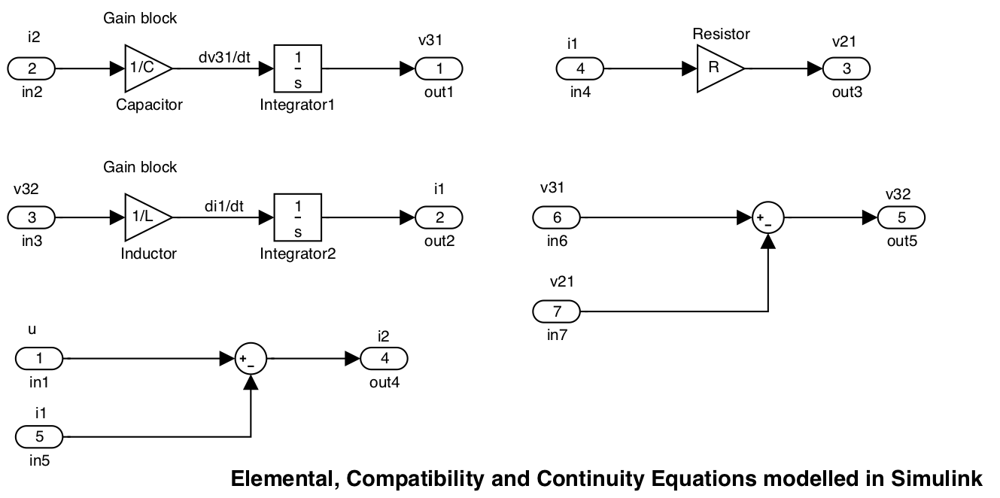

7.1. State Space Models¶
7.1.1. Introduction to State Space¶
Classical control system theory is based on the Transfer Function (TF) model. This applies only to those dynamic systems which can be described by linear time-invariant (LTI) differential equations. TF models are usually applied to Single Input Single Output (SISO) systems. Since the TF is expressed in terms of the Laplace Transform variable, \(s\), analysis and design is mostly carried out in the \(s\)-domain or the frequency domain (\(s=j\omega\)).
Modern control systems theory is based on a time domain description of a system in terms of a set of first order coupled differential equations in the so-called state variables of the system.
State space models can do anything that classical TF models can do.
In addition state space models have allowed control theory to be extended in various directions:
7.1.1.1. Classical control system theory¶
is based on the Transfer Function model.
Can only be used for systems that are defined by LTI differential equations.
7.1.1.2. Modern control systems theory¶
is based on a time-domain description of systems.
System defined in terms of a set of first order coupled differential equations
Uses the so-called state variables of the system
Convenient matrix form makes the model attractive for simulation, analysis and design using packages like MATLAB.
All classical control methods seen so far also apply to state-space models.
7.1.1.3. The Advances Enabled by State Space Models¶
Handling Multiple Input Multiple Output (MIMO) systems.
Extension to linear time-varying systems.
Clarification of issues of controllability and observability.
Development of powerful compensation methods via state feedback and observers.
Development of optimal control theory.
In this module we will restrict ourselves to the study of mostly to SISO LTI systems, but is important to note the possibility of its extension to more challenging areas.
7.1.2. Construction of State Space Models¶
The state-space model is a form of system representation that is used in several engineering disciplines. It is particularly used in control and in signal processing.
The state-space model is a form of differential equation representation and it is principally used when an analysis of the system behaviour is required in terms of time responses. That stated, it is relatively easy to convert a state-space model into a transfer function, to allow the frequency response analysis of a system. It is however not necessary to do this conversion if the time-response behaviour is all that is required.
The state space model is easily extended to cope with models with more than one input and more than one output. It also has more favourable numerical properties that make it more attractive as a representation for high order systems1 than the polynomial representation provided by the transfer function. State-space models are easily simulated by the straightforward application of numerical integration.
7.1.2.1. Example 1¶
Figure 7.1 shows a simple electrical circuit. We shall develop this circuit into a block diagram and from the block-diagram we shall develop the state-space model. Later we will generalise this result.
7.1.2.2. Equations for example 1¶
If we write down the equations for the elements we get:
The “compatability” and “continuity” equations are
Since the system “source” is \(u\), we can construct the block diagram systematically by tracing the equations through from the source.
We also introduce the additional constraint that we would like the derivative terms \(dv_{31}/dt\) and \(di_1/dt\) to appear as inputs to integrator blocks whose outputs are therefore
Integrator equations
We can model these equations in MATLAB/Simulink2 using component block diagram models as shown in Figure 7.2. The other components of equations (1) to (3) appear as gain blocks and (4) and (5) appear as summing junctions.
Simulink model: blocks.slx.
7.1.2.3. Modelled equations¶

Combining these blocks such that the input is \(u\) and the output is the current flowing through the inductance \(i_1\)3 we obtain the block diagram shown in Figure 7.3.
Simulink model: blockdiag.slx
7.1.2.4. Example 1 as a block diagram¶
Having constructed a block diagram that allows us the visualize the structure of the differential equations, we now go on to create the state-space model of the system.
To do this we first identify the “state-variables” which are (in this case) the physical quantities that are changing with time, i.e. the voltage across the capacitor \(v_{31}\) and the current through the inductor \(i_1\)4. The derivatives of these state variables become the left-hand-side of the “state equations”.
These equations have apparently already been written down as (1) and (2), but we impose an additional condition that the state equations can only involve the state-variables, their derivatives and the system input. Thus we have to trace the path back through the block diagram from the inputs to the integrator blocks to the (nearest) state variable(s).
7.1.2.5. State equations for the example¶
Equations (8) and (9) together form a pair of simultaneous equations (they must both be satisfied by the dynamic response of the circuit voltages and currents to the input) and they may therefore be written in vector form5:
7.1.2.6. State equations in vector form¶
The vector \([v_{31}, i_{1}]^T\) is called the “state vector.” Its elements are state variables.6
7.1.2.7. Generalizing the equations¶
We can generalize this result by defining general state variables \(x_1=v_{31}\) and \(x_2=i_1\). Using the notational shorthand \(\dot{x}=dx/dt\) we then get:
7.1.3. General State Space Models of Dynamic Systems¶
An \(n^\mathrm{th}\) order dynamic system can be described by an \(n^\mathrm{th}\) order differential equation in one dependent variable, \(y(t)\), and an input forcing function, \(u(t)\), with time, \(t\), as the independent variable.
Alternatively, in a state space model extra variables, called states, are introduced to create an equivalent description, but this time involving only 1st order differential equations.
An nth order system gives rise to a state space model consisting of n coupled 1st order differential equations (the state equations (14)–(17)) in terms of \(n\) state variables and the input forcing function(s). In addition there are the output equations (13) expressing other variables, or outputs, of interest, also in terms of the states and inputs.
You should note that the formulation used in the differential equation (12) and its equivalent state equations (13)–(18) is completely general and makes no assumptions about the nature of \(f\). In fact the only condition is that it represents a lumped parameter system rather than a distributed parameter system. The need to solve such equations by simulation is the basis of the integral models we introduced in Chapter 1.
7.1.3.1. Example 2¶
Derive a state space model for the system described by the differential equation:
You should try this now. We will work through the solution in class.
7.1.4. Physical States¶
The states are often chosen to have a direct physical significance such as:
Electrical Systems – the charge or voltage on a capacitor or the current in an inductor.
Mechanical Systems – the force in springs or the velocity of mass or angular velocity of moments of inertia.
Aerospace Systems – forward velocity, thrust, pitch and pitch rate, yaw and yaw rate, position and velocity of control surfaces.
Chemical Process Plant – chemical composition, levels, temperatures, pressures and flows.
7.1.4.1. Example 3¶
Derive the state equations for the Spring-Mass-Damper system shown in the Figure 7.4.

You should try this now. We will give the solution in the live class.
7.1.5. The nature of the states¶
The state equations can be solved uniquely when the input functions are given together with the initial values of all the states.
The solutions for the states are substituted into the output equations to obtain the solutions for the other variables in the system.
In the above examples the states are physical quantities associated with energy storage in the system. The energy stored in a inductor is \(E_L=Li_L^2/2\), and the energy stored in a capacitor is \(E_C=CV_C^2/2\).
Similarly for mechanical systems the velocity of a mass relates to its kinetic energy and the force in a spring relates to its elastic potential energy.
The states encode the configuration of the system, or its whole past history.
The choice of states is not unique, but they must be chosen such that the configuration of the system can be unambiguously and completely determined from them.
7.1.6. State Space Models for Linear Systems¶
Linear systems are the most important ones for control system analysis and design as the best methods and techniques apply to these.
Non-linear systems are often approximated about a suitable operating point by the nearest equivalent linear system allowing linear techniques to be used in the design of a suitable controller.
In the case of linear systems, each state equation expresses the derivative of one of the states as a linear function of the states and inputs. The output equations also express the output variables linearly. As a consequence the natural mathematical notation to use is that of vectors and matrices. Thus state, input and output variables are grouped in column vectors and are multiplied by matrices in the state and output equations.
For linear time varying systems, the matrices have elements which are functions of time, but for time invariant systems all the matrices are constant.
Linear systems most important for control systems analysis and design.
Best control methods and techniques apply to linear systems.
Nonlinear systems can often be linearized around a given operating point allowing linear methods to be used.
Linear models can be modelled with matrix equations with makes them attractive to tools like MATLAB.
Linear time-varying systems have matrix elements which are functions of time.
Linear time invariant systems have constant matrix elements.
7.1.6.1. A vector/matrix notation¶
In general, we will have \(n\) state variables and \(q\) system inputs. In such a case we can write down a matrix state equation as developed in the next two slides.
7.1.6.1.1. Matrix State Equation (1)¶
Let us define a general \(n\)-dimensional state vector
Its derivative is $\(\frac{d\mathbf{x}}{dt} = \left[\frac{dx_1}{dt},\ \frac{dx_2}{dt},\ \ldots,\ \frac{dx_n}{dt}\right]^T\)$
or more compactly $\(\dot{\mathbf{x}}=\left[\dot{x_1},\ \dot{x_2},\ \ldots,\ \dot{x_n}\right]^T.\)$
There may be any number of inputs to a system, so we also assume a general vector of \(q\) inputs
7.1.6.1.2. Matrix State Equation (2)¶
or more succinctly $\(\dot{\mathbf{x}}=\mathbf{A}\mathbf{x}+\mathbf{B}\mathbf{u}\)$
Where \(\mathbf{A}\) is the \(n\times n\) “system matrix” and \(\mathbf{B}\) is the \(n\times q\) “input matrix”.
The state equations allow us to describe the internal behaviour of the system when subjected to stimuli from the inputs. In example 1, we need nothing more if we wish to describe the way that the capacitor voltage \(v_{31}\) and inductor current \(i_1\) change with time under the influence of the input current \(u\). However, if we wish to describe the behaviour of the other variables in the circuit we need to complete the state space model with a set of “output equations.”
For illustration purposes we write an “output equation” for every possible signal.
Arranging these equations in vector form we have:
In general, we can describe a system with \(r\) inputs in terms of the generic output variables \(y_1, y_2,\ldots,\ y_r\) as shown in the next two slides.
7.1.6.1.3. General Output Equation (1)¶
Let us define a general output vector $\(\mathbf{y} = \left[y_1,\ y_2,\ \ldots, y_r\right]^T\)$
Given that some of the inputs to the system may be directly connected to the output, the input vector may also appear in the output general equation.
7.1.6.1.4. General Output Equation (2)¶
or more succinctly $\(\mathbf{y}=\mathbf{C}\mathbf{x}+\mathbf{D}\mathbf{u}\)$
Where \(\mathbf{C}\) is the \(n\times r\) “output matrix” and \(\mathbf{D}\) is the \(r\times q\) “feedforward matrix”.
This equation relates the states and inputs to the outputs. There are no dynamic terms!
7.1.6.1.5. The State Space Model¶
This state-space model always be developed from a system with physically realizable states and physical realistic sources. Such a system is called “proper”. If \(\mathbf{D}\) is null (matrix of zeros) the system is called “strictly proper”.
A block diagram representation of the state space model is shown in Figure 7.5. The block diagram of the circuit, rearranged to match the general model is shown in Figure 7.6.

Simulink model: statemodel.slx
7.1.6.2. State-space model for example 1¶
7.1.7. End of Pre-Lecture¶
In class activities
We will review the Simulink models of the circuit
We will work through examples 2 and 3
We will show the MATLAB commands for defining the state-space system of the circuit
We will look at one of the derivation of a state-space model of one of the CTMS
7.1.7.1. Modelling State Space Systems in MATLAB¶
For the example above
Important note, for this to work you must assign numerical values to the
the parameters Cap, R and L.
clear all
cd matlab
format compact
Cap = 1e-6; % 1 uF
L = 3e-3; % 3 mH
R = 200e3; % 200 kOhm
open statemodel.slx
A = [0 -1/Cap; 1/L -R/L];
B = [1/Cap; 0];
C = [1 0; 0 1; 1 -R; 0 R; 0 -1];
D = [0; 0; 0; 0; 1];
circ_ss = ss(A, B, C, D,...
'statename',{'v31' 'i1'}, 'inputname','u',...
'outputname', {'v31' 'i1' 'v32' 'v21' 'i2'});
circ_ss
circ_ss =
A =
v31 i1
v31 0 -1e+06
i1 333.3 -6.667e+07
B =
u
v31 1e+06
i1 0
C =
v31 i1
v31 1 0
i1 0 1
v32 1 -2e+05
v21 0 2e+05
i2 0 -1
D =
u
v31 0
i1 0
v32 0
v21 0
i2 1
Continuous-time state-space model.
Once you have the state-space model, all the analysis techniques seen so far are open to you.
7.1.8. Example 4¶
Construct the state-space model chosen by the class from the Control Systems Tutorials in MATLAB and Simulink collection.
7.1.9. Footnotes¶
Systems with large numbers of derivative terms
Note that in triangular blocks are used for gains and that the transfer function block \(1/s\) represents the integral operator \(\int\). The small elliptical blocks represent input and output ports.
We could have used any signal as an output as we shall see later.
A state variable that can be related to a physical quantity is called a “physical state variable.”
You should expand this matrix equation (8) out to verify that it is equivalent to (6) and (7).
The matrix operator \([]^T\) is the “transpose” operator. In this case it converts the row vector shown into the column vector actually used in the state equations. When applied to a matrix, the rows of the matrix become the columns of the transposed matrix. We shall use the transpose operator in the discussion of state equations to avoid messy attempts to write column vectors in the body of a sentence!
7.1.10. Answers to In-Class Examples¶
7.1.10.1. Solution to Example 2¶
Introducing state variables \(x_1=y\) and \(x_2=dy/dt\) then the state equations are:
and the output equation is:
7.1.10.2. Solution to Example 3¶
For this system, summing the forces in the direction \(x\) we have
If we chose the position \(x\) of the mass \(m\) and its velocity \(dx/dt\) to be the states, and let the force \(F\) be the system input, then \(x_1 = x\), \(x_2 = dx/dt\) and \(u=F\) and the state equations are:
You should construct the Simulink model represented by these equations and compare the results with those shown in Chapter 1.